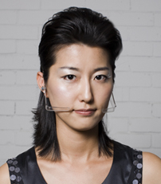
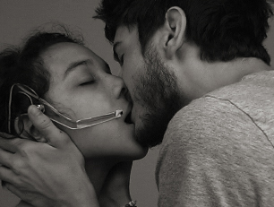
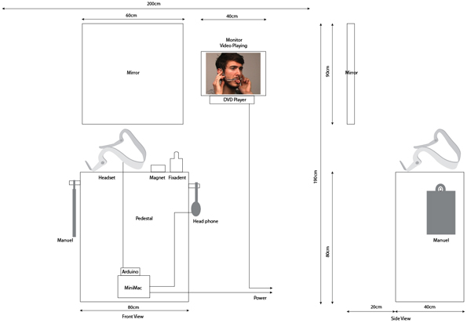

Tongue Music by Hye Yeon Nam is licensed under a Creative Commons Attribution-NonCommercial-NoDerivs 3.0 Unported License.
Based on a work at www.hynam.org.
2009 Sep, The Sound of Kiss
Picture (Model: Hye Yeon Nam(left), Thomas Lodato/Sarah Puerto(right), Photographer:Heidi Geldhauser)
 
Documentation
Floor Plan

Abstract
In the Tongue Music project, I examine a performance-instrumental that makes use of the human tongue to yield amorous sounds, either by solo using a primary tongue controller or as a duet (The Sound of a Kiss) pairing a tongue controller and a receiver. I describe the design of the system and how the participants use the technology in a creative way to produce music.
Implementation
The Tongue Music interface has two components: a customized headset that functions as sensor receiver and a magnet that provides sensor input: magnetic field sensors are attached to the end of the headset, positioned in front of the mouth and the participant affixes a magnet to her tongue with Fixodent. As the participant moves her tongue, this creates varying magnetic fields, which are used to generate a variety of rhythmic tunes. Tongue Music can be played by one participant. But as with kissing, the performance is more engaging when two participants share the interface. When there are two performers, one person wears the headset and the other attaches the magnet to her tongue. The performers then kiss to create sounds as a collaborative affair. Through this interaction, a kiss is translated into music.
Conclusion
Tongue Music: The Sound of a Kiss can be thought of as a sonic representation of the abstract concept of love. Love is a complex emotion, so representing it is a daunting task. Most of us agree that kissing is a natural expression of affection. I hope experiences like Tongue Music: The Sound of a Kiss can reveal and expand the affectionate bond between people.
Credit
Hye Yeon Nam: Director and Programmer
Thomas James Lodato+Sarah B. Puerto, Calvin Ashmore+Audrey Whitman : Model
Tongue Music by Hye Yeon Nam is licensed under a Creative Commons Attribution-NonCommercial-NoDerivs 3.0 Unported License.
Based on a work at www.hynam.org.